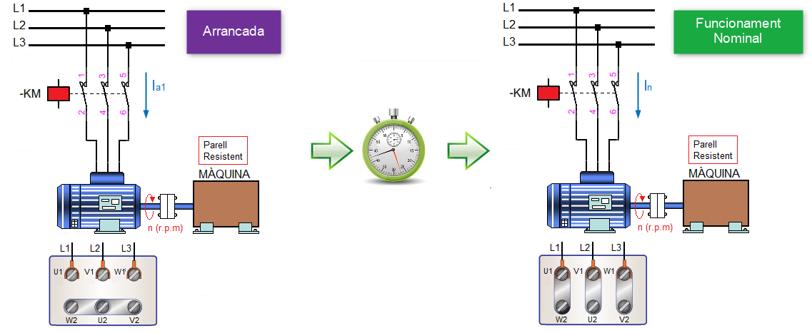
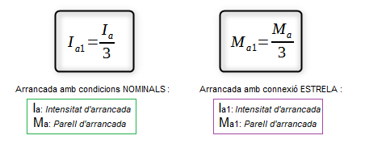
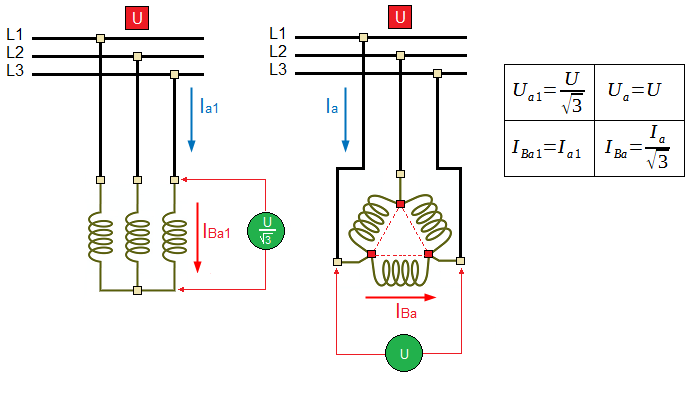
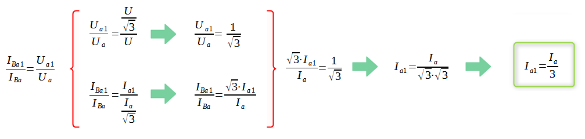
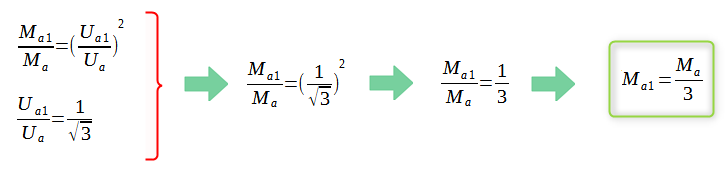
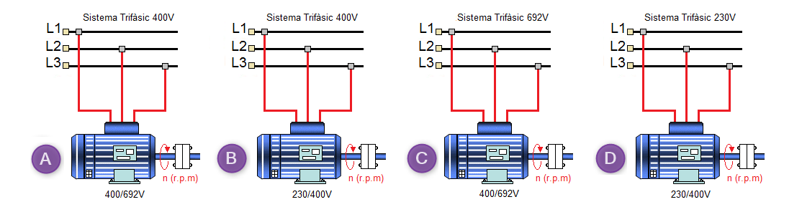
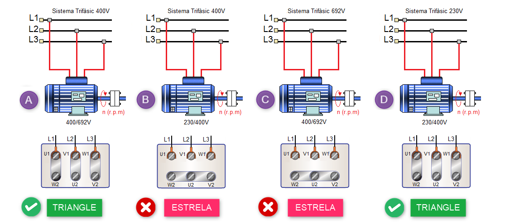
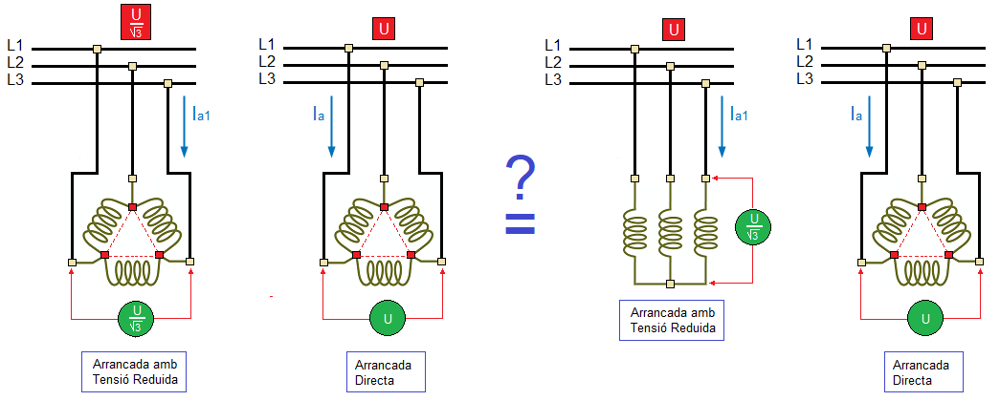
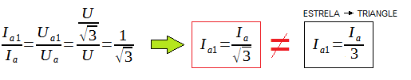

Arranc Estrella-Triangle
| Només es pot utilitzar aquest mètode d'arrancada en motors asíncrons de gàbia d'esquirol on la connexió en règim permanent siga "Triangle" |
Per tant, podem afirmar:
- En un sistema trifàsic amb tensió nominal de 400V, tan sols el motors amb tensions de funcionament 400/692V podem implementar un arrancada "Estrela- Triangle"
- En un sistema trifàsic amb tensió nominal de 230V, tan sols el motors amb tensions de funcionament 230/400V podem implementar un arrancada "Estrela- Triangle"
Aquest sistema d'arrancada consisteix en arrancar en connexió ESTRELA un motor que en condicions nominals s'ha de connectar a la xarxa en connexió TRIANGLE. D'aquesta manera, en el moment de l'arrancada, la tensió que reben les bobines del motor és la nominal dividida per √3. Després d'un cert temps t, canviem a la connexió "Triangle", amb la qual cosa el motor queda funcionant amb normalitat.

Amb aquest sistema s'aconsegueix una important reducció de la intensitat en el moment de l'arrancada (IA), encara que al mateix temps, es produeix també una reducció del parell d'arrancada (MA).

Activitat
Justifica les fórmules anteriors
Com es pot veure en la següent imatge, la relació existent entre els corrents de línia (el que subministra la xarxa-Ia) i el fase (el que travessa les bobines-IBa) quan es produeix l'arrancada en connexió estrela (tensió reduïda) o en connexió triangle (arrancada directa) es completament diferent:

Tenint en compte aquest fet, en la fórmula que relaciona els valors del corrent d'arrancada amb el valors de la tensió d'arrancada s'han de col·locar els valors de corrent que travessen les bobines:

En segon lloc, relacionarem els valors del Parell d'arrancada amb els valors de la tensió d'arrancada:

Activitat
En quins motors es pot implementar un sistema d'arrancada ESTRELA → TRIANGLE?


MOTOR-A
- Segons la placa de característiques del motor, U(Bobina) = 400V
- Sistema Trifàsic 400V
Com que les tensions són iguals, la connexió a la xarxa ha de ser en TRIANGLE → es pot implementat un sistema d'arrancada ESTRELA-TRIANGLE
MOTOR-B
- Segons la placa de característiques del motor, U(Bobina) = 230V
- Sistema Trifàsic 400V
Com que la tensió de la bobina és inferior a la tensió de la xarxa la connexió ha de ser en ESTRELA → NO es pot implementat un sistema d'arrancada ESTRELA-TRIANGLE
| En arrancar en ESTRELA la tensió de la bobina és de UB=230V i al passar a Triangle la tensió de la bobina seria de UB=400V. En aquest cas estaríem aplicant a les bobines del motor una tensió superior a la màxima suportada, cremant d'aquesta manera els bobinats de l'estator. |
MOTOR-C
- Segons la placa de característiques del motor, U(Bobina) = 400V
- Sistema Trifàsic 692V
Com que la tensió de la bobina és inferior a la tensió de la xarxa la connexió ha de ser en ESTRELA → NO es pot implementat un sistema d'arrancada ESTRELA-TRIANGLE
| En arrancar en ESTRELA la tensió de la bobina és de UB=400V i al passar a Triangle la tensió de la bobina seria de UB=692V. En aquest cas estaríem aplicant a les bobines del motor una tensió superior a la màxima suportada, cremant d'aquesta manera els bobinats de l'estator. |
MOTOR-D
- Segons la placa de característiques del motor, U(Bobina) = 230V
- Sistema Trifàsic U=230V
Com que les tensions són iguals, la connexió a la xarxa ha de ser en TRIANGLE → es pot implementat un sistema d'arrancada ESTRELA-TRIANGLE
Activitat
És equivalent una reducció en el valor de la tensió de √3 quan arranca un motor amb connexió triangle que un sistema d'arrancada ESTRELA→TRIANGLE?

En primer lloc, anem a veure quina reducció d'intensitat es produeix en el moment de l'arrancada:

Com es pot veure la reducció en la Intensitat d'arrancada (Ia1) és inferior a la que es produeix amb una arrancada Estrela-Triangle.
En segon lloc, anem a analitzar la reducció en el parell d'arrancada:
Llicenciat sota la Llicència Creative Commons Reconeixement CompartirIgual 4.0